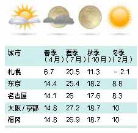

给即将出发的你，请务必知悉，游学安全告知书！
本告知书旨在提示团员在游学期间遵守游学目的国法律法规，遵守中国公民出境旅游文明行为指南，遵守社会公共秩序和社会公德，遵守旅游文明行为规范，遵守学校和营地的校规、营规，尊重当地的风俗习惯、文化传统和宗教信仰，爱护旅游资源，保护生态环境，注意人身及财产安全，特 别提示内容如下：
1、寄宿家庭成员并非全部为白人，团员应同寄 宿家庭成员和睦共处，严禁种族歧视，严格遵 守所在家庭的生活习惯，按照寄宿家庭要求正 确使用各种电器设施，确保安全
2、住宿期间，安全用火，用电，如若发生火灾， 应用毛巾捂住口鼻，从疏散出口迅速撤离。
3、入住酒店时，保管好房卡或钥匙，损坏须照 价赔偿。房间内有免费和收费物品，使用前务 必进行确认，如消费了付费用品，所产生的费 用由旅团承担。
4、活动结束后晚上回到酒店、寄宿家庭、学生 公寓后，禁止单独外出，以避免遭遇抢劫或其 他非安全隐患等事件。
5、离开寄宿家庭、酒店、学生公寓、营地等 居住场所前，应仔细检查所携带的证件、钱财、 行李等物品，避免遗落。
1、要熟悉所在国的交通信号标志，遵守交通法 规，尤其注意右驾习惯国家（包括但不限于： 英国、澳大利亚、新西兰、日本、马来西亚、 新加坡、香港、澳门）的行车规则，过马路时 需关注两侧的车辆，在安全的情况下通行。
2、等候公共交通（包括但不限于巴士、地铁） 期间，不要嬉戏打闹，在安全区域内等候；乘 坐交通工具（包括但不限于飞机、巴士和轿 车）应系好安全带，严禁在行驶中站立、行走 和嬉戏。
3、通过十字路口或行走时，关注路况和周围 的环境，避免因佩戴耳机听音乐、玩游戏等分 散注意力引起不必要的交通事故。
4、如意外发生交通事故，不要惊慌，采取自 救和相互救援的措施，保护好现场，并迅速报 告带团导师或工作人员。
1、中西方饮食观念存在差异，西方多以生食、 冷食为主，为体验中西饮食文化差异，需做到 入乡随俗。
2、国外大多国家的自来水可直接饮用（注意： 温热水为非饮用水，冷水为饮用水，若要饮用 热水需自行烧开）。
3、注意饮食安全卫生，在行程中指定的用餐 地点、寄宿家庭用餐，不随意购买和饮用地摊 或小商贩提供的饮料食品。
4、牢记自己的饮食禁忌，合理选择食品，不 盲目尝鲜，贪吃，乱吃，禁食对自身身体状况 会造成过敏或其它不良反应的食品，游学活动 全程严禁饮酒。
户外活动包括但不限于登山、森林探险、牧场和营区活动等。
1、应在指定区域活动，注意安全，严禁在无监护情况下私自活动。
2、参加活动时，严禁私自进行非行程中安排的 游泳、潜水等活动。
3、在景区活动时，请紧随带队人员一同游览， 避免掉队或迷路。自由活动期间，需仔细聆听 新东方带团导师或工作人员交代的各种注意事 项，谨记带团导师或当地导游的联系方式，在 指定区域活动，并保持联系方式畅通，按指定 时间及地点集合，不得擅自脱离指定区域。
4、开展娱乐活动时要注意娱乐项目的安全提示， 并根据自己身体状况选择活动项目。
1、游学期间严禁私自在任何场合游泳，包括但 不限于寄宿家庭、学生公寓、营地、学校、酒 店等的游泳场所，严禁使用健身器材和酒店的 桑拿设施（行程中安排项目除外，参加活动时 须听从安排，遵守各项安全条例）。
2、游学期间妥善保管自己的财物，尤其是在 公共场所人多时，更应注意。如有个人购买行为， 请务必索取完整的发票和购买证明。对移动摊 贩摆列物品如无意购买，切勿与商贩讨价还价， 以免发生争执。凡境外涉及除自身购物外，其 他额外支付钱财等经济问题，请直接与团员所 在团的新东方紧急联系人沟通确认，勿私自委 托导游或其他个人代为支付。
3、游学期间团员间应保持文明友好、和睦相 处的处事态度，相互包容。很多西方国家法律 法规严明，肢体接触会被视为不礼貌的行为， 公共场所吵架、相互谩骂会引起周围人的报警， 如发生严重的打架斗殴事件更会造成拒绝当事 人再次入境、留学目的国被拒签的不良影响。
4、游学期间不拿、不看法轮功等组织发放的 资料；如若发生，入境中国时将会直接被海 关扣留。
5、游学期间团员要有安全防范意识，学会自 我保护，做到自尊、自爱、自重，拒绝不良诱 惑；对其个人行为做好自我管理，严禁打架斗 殴、吸食毒品、偷抢他人钱物、非法侵占他人 钱物等行为发生，否则由此造成的后果自行承 担。如给第三方造成伤害，应当承担相应的赔 偿责任。
6、游学全程中（包括但不限于活动期间、回 酒店 / 寄宿家庭 / 学生公寓 / 营地休息期间）， 严禁脱离团队或者私自外出，若有特殊情况需 提前与带团导师沟通并征得同意，否则由此造 成的任何后果自行承担。
1、团员应确保自身健康状况无任何不适合参加 本次游学活动的传染性疾病、心理类或精神类疾病（包括但不限于：抑郁症、焦虑症、狂躁症、阿斯伯格综合症、自闭症、癫痫等）以及有学习、生活方面的障碍，需要专人特别指导或照顾的情况。
2、同意并授权带团导师等在团员发生疾病或 意外事故时，进行及时协助和护理，并在需要 时提供医疗服务。
3、团员因健康状况需要经常性服药或治疗的， 应确保具备自理和自我照料能力，严格遵照医 嘱备足游学期间的药量，并按时按量服用。
4、如团员有食物过敏史，团员本人有义务判 断食用的食物是否可能导致过敏症状，对食用 的食物负有检查的最终责任。
安全告知内容包括但不限于以上内容，在日常 工作中，新东方国际游学工作人员以口头、电 子邮件、短信、微信、告知书等形式对团员做 出的各类安全提示也请注意并遵守。检查的最终责任。
如何顺利出入境

1 . 全程护照交由领队老师统一保管，但是在安 检、出入境等必须要本人亲自携带护照时，领 队老师将会交到你的手上亲自保管，请务必保 管好，丢失将无法值机及出入境。一旦不需要 本人必须亲自携带护照时，请务必第一时间将 护照交给领队老师保管。
2. 托运行李时切勿将贵重物品以及证件放在行 李箱中，应随身携带
3. 过边检时请耐心排队，如遇到任何困难可以 请教领队，需要申报物品请避免携带。注：需要申报的物品：携带净价超过一万元高档电器，携带超过5000 美元的现金或携带超过5000 美元的贵重物品
4. 过安检的时候，小心不要落下你的物品。
5. 飞机会提前半个小时左右关闭舱门，集合时 一定不可以迟到。
如果你是自备签或者免签，出发当天不要忘 记携带你的有效护照或者你回到中国的有效签 证哦 ~

1. 入境审核时请有序排队进行，此时请勿拍照， 遇到回答不了的问题可以求助领队。
2. 提取行李后检查是否拿错，切记不要着急 撕掉行李条，若行李有问题，请第一时间联 系领队。
3. 海关抽查时不要慌张，配合海关人员即可。
不允许带上飞机的物品：
液体、凝胶及喷雾类产品包括饮品，例如矿泉水、饮料、汤及糖浆；乳霜、护肤液、护肤油、香水及化妆品； 喷雾及压缩容器，例如剃须泡沫及香体喷雾； 膏状物品，例如牙膏； 隐形眼镜药水； 凝胶，例如头发定型及沐浴用的凝胶产品；任何稠度相似的溶液及物品。金属利器如剪刀、水果刀等必须进行托运，不可随身携带。
不能携带入境的物品：
特殊药品（精神类药品，含麻醉成分的咳嗽药，镇定剂，安眠药等）、动植物（水果、蔬菜、坚果类、各种肉类、动物皮毛）
【找座位、放行李】
上飞机后按照登机牌座位号找到自己的座位，把随身携带的物品放在头顶上方的行李架上，较重物品可放在座位下面，但不要把东西放在安全门前或出入通道上。
【系安全带、低声交谈】
飞行过程中除非有事必须离座，否则全程系好安全带，如发生任何状况，应保持镇静，听从空乘人员指示。在飞机上请保持安静，可以低声交谈，不要大声喧哗，更不得离座追逐打闹，以免影响他人休息。
【飞机餐、备零食】
根据航班的时间飞机上会提供餐食，有的是正餐有的是简餐，所以有时候可能不够吃，请同学根据自己的实际情况酌情带一些小零食以备飞机上食用，但不要太多。
入境亚洲国家目的地时，需在【外国人通道】排队先后通过①移民局②行李区③过海关； ①在移民局，需要出示：【有效护照和签证】、【出入境卡】（由领队老师统一在飞机上填写，但需本人亲自签字）。工作人员会撕下入境部分，剩下的出境部分待回国时使用，请完整保留好。 日本、韩国此环节需要拍照、采集指纹。②行李区：根据指示牌，寻找所乘坐航班的行李提取区域，一般会以数字做标识。③过海关：日本、韩国需要填写海关申报单，填好后交给工作人员即可。请不要携带超过5000 美金的现金或违禁物品，否则海关会要求学生走申报通道，造成入关不便。
海关会问几个常规的问题，多数情况用英文， 会中文的官员会用中文来提问，比如：
来此国家的目的?
都去哪些城市？
来自中国的什么地方？
在这里停留多久？
对工作人员提出的问题，照实回答即可；如有解答不了的或者听不懂问题，可寻求领队老师的帮助。？
以下是一些入境时常用的英语问答：
Q: What's the purpose of your visit? ( 你来这里的目的是什么？ )
A: I am here for a summer/winter studytour. （我是来参加夏/ 冬令营）
Q: How long will you stay in Japan/Korea/Singapore/Hongkong?( 你会在日本/ 韩国/ 新加坡/ 香港停留多长时间)
A: About____ days.（根据实际的停留时间）
Q: Which cities will you visit at your trip?（你在本次旅途中会去哪几个城市）？ )
A: 参考回答I will visit Tokyo, Osaka,Nagoya（我会去东京，大阪，名古屋，根据实际会去到的城市作答）
Q: Which part of China are you from?（你来自中国的哪个地区）
A: 如Beijing.（如北京，根据你实际来自的地区作答）
Q: How much money do you have withyou? （你随身携带多少现金？）
A：I have 500 dollars（ 大约500 美元）/50000 Japanese en（大约50000 日元）等。
回国的飞机降落后，请大家跟随领队老师一一通过卫生检疫和边防检查。过边防检查的时候，请大家一律走人工通道，由工作人员为你的护照盖入境章，随后领队老师会为每个学生拍摄入境章图片。提取行李后拍摄集体照，与小伙伴们告别，和家人团聚。
在课堂里天天向上
我们在新加坡和香港可以参与多样的游学课程：ESL 英语课程，全真课堂，户外主题课程等，那么这些课程具体是怎么样的？每种课程我们都在哪里上课？我们又该注意些什么？这些都可以在新东方国际游学的官网找到答案哦。
是专门针对国际学生加强口语和听力训练的课程，每天一个主题。由于时间较短，课程内容相对简单，没有专属的教材，老师可能会根据情况发一些学习资料。
由专业的韩语老师零基础开始授课韩语，学生在轻松的环境下，快速入门韩语，内容如下：
①了解韩语历史
②用韩语写自己的名字
③了解韩国文化
④学习基础单词，练习口语
⑤学习生活用语
⑥学习旅行时能用到的简单对话
⑦学习韩剧中的韩语
出于尊重和礼貌，课堂上杜绝玩手机、吃东西、迟到早退等现象，上课期间认真听讲、记笔记，并且不干扰老师授课以及其他人的学习。如有违反，对于行为恶劣的学生学校有权终止其上课的权利。
在新加坡、香港有时候会用英语授课。由于中国学生的英语水平不一，有时候会发生在课堂上听不懂的现象；对于第一次接触全英语教学的同学们会发现完全不知道老师在说什么。这个时候，我们建议学生利用课间时间多与老师沟通，诚恳的告诉老师你的问题，如果实在跟不上课堂的节奏，请及时把情况反映给领队老师，由领队跟学校负责人沟通，协调解决方案。
对于刚刚组成的团体，由于每个人个性、年龄、生活背景不同，可能会有陌生感，建议领队老师多鼓励学生去勇于尝试新事物，去结实新的朋友，与团里的其他孩子友好相处、互帮互助，这样也一定会赢得其他同学的欢迎，在有机会接触当地的学生时，也可以提前准备一些话题，例如可以询问对方的爱好、学习等情况，这样一次游学下来不仅仅实现了开阔视野，同时也能够结交到更多国内外的朋友。
在亚洲的住宿特点
亚洲目的地国家占地面积小，很多地区寸土寸金，所以酒店房间的入住面积相对也很小，不能与中国国内的很多酒店相比，此情况还请提前了解好，做好心理准备。
在亚洲的很多国家，酒店是没有具体的星级评定的。很多情况是一些旅游界人士根据中国人的评定标准自行给出的，并不是官方评定，所以出行亚洲国家时还请不要与中国的星级标准来做衡量。
亚洲某些目的地国家，出于环保考虑，不提供一次性洗漱用品，特别是香港、新加坡，若出现部分酒店不提供洗漱用品时，还请您提前准备。
根据各目的地国家以及地区的不同，所以酒店内WiFi 的情况也不相同。大多数酒店是可以满足大堂和房间都有WiFi 的条件，不过有的部分酒店只满足大堂有WiFi，当行程中出现稍偏远地区的酒店时（比如日本温泉酒店大多在山上），有时大堂可能也不提供WiFi。
根据各目的地国家以及地区的不同，酒店的有线网络情况及相关费用也会不同。根据出发前最终确定的酒店而定。
根据各目的地国家及地区的不同，酒店房间内的电话情况也会不同。使用方法及收费情况请以当天入住酒店的实际情况为准。若房间内产生拨打的电话费用请在退房时自付费用。
根据各目的地国家及地区的不同，酒店房间内的Minibar 也会不同，通常放一些收费饮品、零食等。有的酒店会提前撤出，有的酒店不予以准备，也有些酒店原地摆放，还请以最终确认的酒店实际情况为准。若产生消费，请在退房时自付费用。
根据各目的地国家及地区的不同，酒店房间内的电视情况也会不同。通常情况下是免费的，也有个别收费的情况，特别是日本，还请提前看好房间内的说明，显示【有料】的内容均为收费电视，若产生费用还请退房时自行付费。
新加坡的学生宿舍区别于传统意义的学生宿舍，由于国家地理面积小，很多学校校内的宿舍会比较有限，所以学生会住在外面的hostel，也会有一些短期游学的国际生住在这里，当地称为学生宿舍。这样的学生宿舍具备基本的生活设施，如床、柜子等，有一些还提供用餐和健身设施等，可能会没有电视、minibar、座机这类的设施，洗漱用品和拖鞋需要自行携带，设计以朴素、简单的风格为主。
新加坡度假村通常位于沙滩或者树林周边，环境较好，通常为4 人间，平常进到房间里面会看到2 张床，晚上睡觉的时候，两张床的侧面可以再拉出2 个床铺，通常房间面积要比酒店稍大一些，并且房间会是一排平房，给人更多接触自然的机会。洗漱用品和拖鞋等通常需要自行携带。
韩国民宿也叫做homestay 或者寄宿家庭，多数为地热房，韩国传统家庭大多都睡在地板上。 一般情况根据家庭空间的大小及布局，会安排2-4 名同性别团员住在一个家庭内。
（1）日语里洗澡的地方，汉字表示为"風呂"。
（2）住宿在温泉酒店里去泡澡是不需要另外付费的。
（3）大型温泉酒店一般在底楼和高层各设有一个温泉。
（4）泡温泉时的准备是什么？
①换好浴衣（酒店会提前准备放进各自房间）、带上毛巾前往温泉。
②进入浴室后，将衣物放在更衣室小衣柜或者衣物筐内，在进入浴场前，需要坐在淋浴池的
板凳上冲洗干净，因为浴池的温泉水大家共用，所以洗净身体后方可入浴，千万不能穿着泳衣或裹着毛巾入池；如果实在太害羞，不妨将裹身的毛巾放在浴池边，等到起身后再披上毛巾。
③入池前可先测水温再缓慢入池，以免水太烫。
④入池泡澡，可以暖身、消除疲劳。
⑤然后再回到洗身体处，洗头及用肥皂搓洗身体，用水充分冲掉身上的泡沫后再下浴池泡温泉。
⑥充分泡澡接受后用毛巾擦干。
（5）泡温泉的注意事项有哪些？
①请勿站立冲洗身体以免影响他人，很多地方会提供板凳，请坐在上面冲洗
②请勿在浴池里搓澡，也请勿用毛巾、肥皂在浴池里搓洗身体、请勿将毛巾泡进浴池
③酒后、空腹建议不要前往浴池泡澡
④如有心脏病、糖尿病、高血压症状不适宜泡澡；有纹身不能入池泡澡
⑤旅馆有规定的浴池利用时间，请根据时间前去泡澡
⑥酒后、空腹建议不要前往浴池泡澡
在突发事件中如何从容面对
请全程谨记：
请全程谨记：像爱护生命一样爱护你的护照！护照是营员在国外唯一有效的身份证明，丢失护照将是最大的麻烦。所以，全体营员的护照会交给领队老师统一保存，但在出入移民局、过海关及乘飞机过程中，护照须由营员自行保管。请注意不要把护照和机票放在飞机座椅储物袋内以免遗忘。丢失护照将不能再随团继续旅行，而且还要另外付费到我国在当地的领馆办理临时证件，所以请务必全程交予领队保管好。
在团队游览中，尽量结伴而行，紧跟领队老师及大团队。如果不幸迷路，一定原路等待，并尽快联系领队老师，告知附近标志性建筑物，大概迷路多长时间等。如果因为信号不畅等其他因素联系不上领队或同团同学，可以拨打当地紧急报警电话：日本110；韩国112；香港999；新加坡999。如果你不会说英语时请讲：Help, I speak Chinese. 接线生会找讲中文的翻译来帮助你。不要挂断电话，求救台可以循线查找你的位置。
由于国外的不法之徒了解中国人旅行会携带大 量现金，所以如果有陌生人搭讪，请不要理会，抓紧离开。如果陌生人继续纠缠，请马上报领队老师。
在行程中的任何时间受伤或感到身体不适，如
感冒、发烧、拉肚子等都要及时报告领队老师，由老师或其他工作人员安排你就医。在就医期
间发生的医药费，可以现场付钱，也会有医院就医后寄账单，由本人或者监护人支付。如果没有如期支付账单，会影响学生下次进入该国。医药费在学生回国后，由学生的监护人直接向保险公司进行理赔，需要准备如下资料：
1) 完整的门、急诊病历或诊断证明（核对学生
姓名、出生年月日、写明病因或者病名，一般有医生签名）
2）医疗正式收据原件。其他理赔资料清单，请向领队老师索要理赔申请表，上面有列明。注意：如果去几家不同医院看病，每次都需要提交（病历+ 收据）。
发生东西丢失时，第一时间报告领队老师，他会协助你进行寻找。有些学校和大的景点会有失物招领处（Lost & Found），可以去那里查找。如果贵重物品丢失或者涉及偷窃、抢劫等，需要拨打报警电话处理：日本110；韩国112；香港999；新加坡999。请注意，寻找物品过程中所涉及的一切费用需要学生自行承担。但是请注意很多国外的警察对待中国游客物品丢失的情况并不太予以重视，处理速度会非常缓慢，而我们的行程又是比较紧凑的，无法在一个城市一直等待，若等待，后续行程将无法参加。
如果在提取行李时，发现并没有你的行李，要迅速报告领队老师，领队老师会协助你与航空公司进行查询，查看行李是会随下一班航班到达还是更晚。领队会协助你选择在机场等待还是前往酒店，由航空公司邮寄到酒店。如果行李最终确认丢失，需要学生本人跟航空公司理赔。若是行李有损坏，请第一时间告知领队，机场处理行李事宜的柜台会根据行李损坏的情况来判断是否给予赔偿。
发生航班延误时，领队会跟航空公司沟通后期的航班安排。此时请务必不要惊慌，听从领队老师的指挥。如果因天气、航空管制等原因造成航班延误进而影响行程的，属于不可抗力因素，航空公司不会理赔，我们也将会尽最大努力完成可以完成的行程。
旅游车内任何时候均禁止吸烟，不允许出现以下的行为：吃东西、喝碳酸饮料、脱鞋子、敲打窗户。需要大家共同维护车厢整洁，空气清新。
【日本】：日式料理。比如日式定食、日式火锅等内容，以防学生不适应日餐，有时候也会搭配中餐。
【韩国】：韩餐。比如石锅拌饭、参鸡汤、韩式烤肉等，有时候也会搭配中餐。
【新加坡】：以中式桌餐为主，搭配肉骨茶、海南鸡饭、娘惹餐特色餐。
【香港】：以中式桌餐为主，也会有当地的特色餐点，口味上相对北方来讲清淡一些。。
一般情况会统一安排大巴车，根据人数不同车型大小会有所不同。且根据线路情况、城市、时间的安排等，有时会出现车辆调配的可能。
导游及巴士司机的服务小费我们已经为您支付了。日本、韩国、新加坡本身是不需要支付小费的。
整个游学中，请务必随身携带此本指南。上面有紧急联系通讯录，万一发生迷路、与团队走散或其它紧急情况，都需立即与领队老师联系，与在北京的国内紧急联系人取得联系。及时报失、报警，以备向有关部门报备或索赔，以便迅速解决问题。
我们的团组不允许学生自行参加任何行程以外的景点。
可以请你的亲友晚上来到酒店探访你，提前跟领队老师报备后，你和亲人、朋友就能在酒店一起聊天了。如果亲友要带你离开团队，必须在出行前请你的父母与新东方签订补充协议，方可脱团。如脱团，请保证在指定时间按时归队，以免影响后面的行程。
亚洲印象
人口： 日本的人口超过1.2 亿，是世界人口数量第10 大国。首都东京及周边的数县构成的首都圈居住了3000 万以上的人口，是世界最大的都市圈之一。
地理：日本位于亚洲大陆东边的太平洋上，是一个由东北向西南延伸的弧形岛国。西隔东海、黄海、朝鲜海峡、日本海，与中国、朝鲜、韩国和俄罗斯相望。日本的国土面积是377873平方公里，和我国云南省面积相当。领土由北海道、本州、四国、九州４个大岛和其他6800 多个小岛屿组成。因此也被称之为"千岛之国"。
天气：日本属于温带海洋性气候，四季分明， 气候温和。春季和秋季建议携带轻便的衣物和套衫；夏季建议携带质地薄且宽松的衣物，上装短袖；冬季建议携带大衣、保暖内衣和厚靴子。具体情况请根据游览地区灵活调整；请自备雨伞；
宗教：主要民族为大和族，北海道地区约有2.4万阿伊努族人。通用日语，北海道地区有少量人会阿伊努语。主要宗教为神道教和佛教，信仰人口分别占宗教人口的49.6％和44.8％。
气候：日本气候四季分明，每个季节都各有吸引人的地方，观光旅游的最好季节是春季和秋季。
流通货币和外币兑换： 日本只流通日本本国货币，不流通外币。如有购物计划, 请事先在国内预先准备好日元。如金额较大，建议您使用国际信用卡。
银联卡在日本几乎覆盖了主要旅游目的地，日本很多商户都接受银联卡的使用， 并且在一些有银联标志的ATM 机上可以提取现金。国家外汇管理局规定：中国公民携带外币现钞在等值5000 美元以下（含5000 美元）时无需向海关申报；携带外币现钞在等值5000 美元（含5000 美元）以上至10000 美元（含10000 美元）时, 应当向银行申领《携带证》。
饮用水/ 电压/ 插座：
1、日本国内自来水可以直接饮用。如需要矿泉水，可在超级市场或便利店购买。
2、日本的电压为100 伏。频率有两种，东日本的频率是50Hz；包括名古屋、京都和大阪在内的西日本的频率是60Hz。当您使用自带电器用品时，这些电器应该可以使用100伏电压。
3、日本使用电插座是双平脚插座。在日本是无法使用圆柱形插头和三平脚插头。我们已经为您准备了日本可用的转换插头。
税金/ 服务费/ 小费
税 金：日本政府征收8％的消费税，所以无论消费什么，都必须缴纳支付额8％ 的消费税
服务费：您在酒店或餐馆等处的消费，除了要 支付消费税外，有些地方可能还要另外收取消费额10% 到15% 的服务费。
小 费：在日本没有收取小费的习惯。
药品：如备有出行使用的应急药品，请尽量携 带整盒片剂或者是冲剂（切勿携带药水或糖浆之内的水剂药物）。如服食定量药品，请只携带必要的剂量上飞机，其余药品置于托运行李里交航空公司托运
风俗习惯：日本人见面多以鞠躬为礼，在国际 交往中，也习惯握手礼。在日本，名片的使用相当广泛。
卫生习惯：在国外时请尊重当地的卫生习惯， 未成年人请不要饮酒、吸烟及在公共场合大声喧哗。旅游车内禁止吸烟，也严禁将容易泼洒的饮料带上车；废弃物品请放进塑胶袋中 ；
餐饮习惯：日本饮食注重材料新鲜，口味清淡， 式样简单，主要注重形、色、器皿的相互配合和统一，重质不重量。如有用餐不习惯，可根据个人喜好适当带些榨菜、点心或饼干等小食品。希望您理解体验当地的饮食也是对日本文化习俗的一个了解过程；
其他相关信息：中国驻日本大使馆领事部
地址：106-0046 东京都港区元麻布3-4-33
电话：03-3403-3064
传真：03-3403-5447
东京—银座银座是东京非常繁华的商业街区，云集了著名 的三越、高岛屋等大型高档商场及品牌专卖店。在银座的大商场中典型的日本化的东西非常多，许多都是日本自己的品牌，本土国产货较多。
东京—皇居外苑& 二重桥
皇居外苑俗称皇居前广场，南侧的二重桥是游客的必到之地。二重桥下的护城河，水平如镜，宫宇苍垂柳倒映其中，显得格外优美，被公认为皇居最美之地。
东京- 浅草寺
历史很悠久，它的起源据传是在 1370 年前，一对以捕鱼为生的兄弟俩在隅田川中发现了观音像，就建了这座寺院供奉起来。浅草寺的象征物是风雷神门，上面挂着写有"雷门"两个字的大红灯笼，这里每天都有前来参拜的观光客，终年熙熙攘攘。
大阪-- 大阪城
系丰臣秀吉于1586 年所建，是由雄伟的石墙砌造而成，大阪城公园内城中央耸立着大阪城的主体建筑天守阁，巍峨宏伟，镶铜镀金，十分壮观。登上高五层八阶的天守阁，可以瞭望整个大阪市。如今大阪城已被定为特别史迹。城内的历史博物馆里保存有丰臣秀吉的木像、武器和美术作品等。
大阪- 道顿崛
美食街位于日本大阪心斋桥附近，是大阪美食的代表地点。在这里各种美食的招牌每天都招来川流不息的人潮，最有名的大螃蟹招牌更是道顿崛美食街的标志，尤其是当夜晚来临，闪烁的霓虹灯更是诱人。许多著名的小吃像金龙拉面、章鱼烧、回转寿司、河豚肉等在这都可以吃到。
大阪- 心斋桥
作为大阪最大的购物区，集中了许多精品屋和专卖店，从早到晚熙熙攘攘，到处是市民和游客的人流。心斋桥是以带有拱廊设施的心斋桥筋商店街为中心发展起来的。这里大型百货店、百年老铺、面向平民的各种小店铺鳞次栉比。石板铺就的人行道、英国风格的路灯和成排砖造建筑物的周防町筋，格调高雅，这一带被人称为欧洲村。
京都—金阁寺
金阁寺与富士山、艺妓并列为外国人眼中日本三大典型印象。因为寺内主要核心建筑舍利殿的外墙全是以金箔装饰，因此得到金阁寺的昵
称。1994 年被联合国教科文组织指定为"世界文化遗产"的重要历史建筑，也是日本古都京都的一处文化宝藏和旅游名胜。
京都—岚山
岚山一带是日本全国闻名的樱花名胜。盛开时漫山遍野的粉红色与墨绿色的山林构成油画般的美景。此处还有周恩来总理的题词，因此也非常受中国游客的喜爱。
奈良—东大寺
东大寺位于平城京( 今奈良) 东，是南都七大寺之一，距今约有一千二百余年的历史。中国唐代高僧鉴真和尚曾在这里设坛授戒。1997年秋，出席"中韩日三国佛教友好交流会议"的三国代表曾在这里共同举行了祈祷世界和平法会。
日本大学介绍
东京大学
东京大学（The University of Tokyo），简称东大，诞生于1877 年，初设法学、理学、文学、医学四个学部，是日本第一所国立大学，也是亚洲最早的西制大学之一。学校于1886 年更名为帝国大学，1897 年，易名"东京帝国大学"，以区分同年在京都创立的（京都）帝国大学；1947 年9 月，正式定名为东京大学。
东京大学部分科系最早可以溯源到灵元天皇时期，学校主体由"东京开成学校"与"东京医学校"在明治维新期间合并改制而成。作为资本主义文明浪潮冲击下的直接产物，东京大学有着举
足轻重的历史性地位，它培养了包括1 名菲尔兹奖得主、6 名沃尔夫奖得主、8 名诺贝尔奖得主、16 位日本首相、21 位（帝国）国会议长在内的一大批学术名家、工商巨子、政经菁英，
是日本重要的政商、文化阵地，是日本最高学术殿堂、是亚洲乃至世界最顶尖的科研教育机
构之一。
早稻田大学
早稻田大学（ Waseda University），简称早大，
本部设在日本东京都新宿区，是日本久负盛名的著名顶尖学府。1882 年伴随着"学问要独立"的宣言声，早稻田大学于东京诞生。而今，风雨走过132 年的早稻田大学，已发展成为一所世界知名的顶尖学府。
早稻田大学作为闻名世界的顶尖名校，其毕业生在政界、财界、商界、文艺界可谓人才辈出。包括前任日本首相野田佳彦在内，有七位日本首相是早稻田大学的毕业生，国会议员近三分之一出身于早稻田大学。索尼、三星、本田、东芝、三菱、任天堂等众多著名公司的创始人及社长皆出身于早稻田大学。至今为止，已有30 名校友成为日本文学最高奖之芥川奖得主，居全日本之首。
创价大学
创价大学（创価大学 そうかだいがく Sōka
University）是一所位于日本东京都八王子市的私立大学。创价大学是由创价学会名誉会长池田大作先生创办，因此和创价学会有非常深的关系。除了教职员以外，大部份学生也是创价学会的信众。
作为创价一贯教育创立的基础——创价教育理念，是由学校校长、教育哲学家、创价学会创办人牧口常三郎先生（1871 年—1944 年）的思想和忧虑渊源际会产生的。创价大学自1971年建校以来，以"成为保卫人类和平的要塞"为根本出发点，积极地推进与世界各国大学的交流。截止到目前为止（2008 年3 月），交流协定横跨欧亚非、南北美及大洋洲等5 大陆，涵盖44 个国家地区，102 所大学。
位置：大韩民国位于亚洲东北部, 半岛西部的鸭绿江是中国和韩国的分界线，东北部的图们江是韩国、中国和俄罗斯的国土分界线。
气候：韩国的天气属于大陆性气候, 在降水量 上属于季风气候。 韩国气候特点是四季分明。
人口：韩半岛总人口估计约为7~8 千万名。以下内容均为关于南韩的资料，韩国也被称为南韩。
公交：首尔公交路线十分发达，无论是谁都可 以轻松便捷地乘车。
地铁：大多数地铁路线用韩文和英文标记。各地铁站名旁边的数字是从该站出发到图上所在地的费用。
公共场所须知：1、公众场合请勿吸烟、吐痰、大声喧哗，排队时不可插队拥挤，勿随手扔垃圾、吐口香糖。
2、寺庙、高级娱乐场所为公认的正式场合，进
入时，衣着须端庄整洁，不可袒胸露背、穿拖鞋、短裤、迷你裙、无袖上衣或其他不适宜的衣服 。
3、照相在韩国受到严格限制，军事设施、机场、水库、地铁、国立博物馆以及娱乐场所都是禁照对象，在空中和高层建筑拍照也都在被禁之列。
风俗禁忌：1、韩国政府规定，公民对国旗、国歌、国花必
须敬重。
2、在韩国人面前，切勿提"朝鲜"二字
3、韩国人用双手接礼物，但不会当着客人的面
打开。不宜送外国香烟给韩国友人，酒是送韩国男人最好的礼品，但不能送酒给妇女
4、韩国人传统的餐桌是矮腿小桌，放在地炕上，用餐时，宾主都应席地盘腿而坐。无论是谁，绝对不能把双腿伸直或叉开，否则会被认为是不懂礼貌或侮辱人
其他相关信息：
中华人民共和国驻大韩民国大使馆：
电话：0082-2-738-1038；
地址：首尔特别市钟路区孝子洞54 番地
报警： 112
救急车：119
紧急处理 ：129
首尔—景福宫
景福宫是太祖李成桂于1395 年建造的新朝鲜王朝的正宫，位于东阙( 昌德宫)、席阙( 庆熙宫)的北侧，因而又称"北阙"。 在韩国五大宫阙中无论就规模还是建筑风格都堪称五宫之首。在勤政殿里举行过登基仪式的王有第2 代王定。
宗、第4 代王世宗、第6 代王端宗、第7 代王世祖、第9 代王成宗、第11 代王中宗、第13代王明宗等。
首尔-- 光华门广场
有600 多年的历史，周围环绕着风光秀丽的北岳山和首尔象征景福宫。
首尔—青瓦台
韩国总统官邸，位于首尔市钟路区世宗路一号。青瓦台原是高丽王朝的离宫，1426 年朝鲜王朝建都汉城（首尔）后，把它做为景福宫后园，修建了隆武堂、庆农斋和练武场等一些建筑物，并开了一块国王的亲耕地。
首尔-- 清溪川
清溪川是首尔市中心的一条河流，1950 至1960 年代，由于经济增长及都市发展，清溪川清溪川的水质因废水的排放而变得恶劣。2003年，在首尔市长李明博推动下进行重新修复工程，不仅将清溪高架道路拆除，并重新挖掘河道，为河流重新美化、灌水，及种植各种植物等等，清溪川现已成为首尔市中心一个休憩地点。
首尔—明洞
位于首尔中区，是韩国代表性的购物街，不仅可以购买服装、鞋类、杂货和化妆品，还有各种饮食店，同时银行和证券公司云集于此。明洞大街两旁都是高级名牌的店铺，附近还有乐天百货店、新世界百货店和很多综合购物中心。
首尔-- 北村韩屋村
这里有有许多韩国传统房屋，是首尔最具代表性的传统居住地, 且到处都有很多史迹、文化遗产和民俗资料。因此, 被称为城市中心的街道博物馆。
济州岛
是韩国最大的岛屿，是一座典型的火山岛，地貌十分奇特，是世界新七大自然奇观之一。济州岛地处北纬33 度线附近，却具有南国气候的特征，是韩国平均气温最高、降水最多的地方。
首尔大学
首尔大学（韩国语：서울대학교 ），又称国立首尔大学，建校以来，产生了一大批社会人物，享有"韩民族最高学府"之称。
首尔大学在2014 年QS 世界大学排名中排名韩国第1 位，亚洲第5 位，世界第31 位。泰
晤士高等教育世界大学声誉排名韩国第1，亚洲第8 位，世界51-60 位；世界大学学术排
名全球大学排名102-150 位。在2009 年法国国立巴黎高等矿业学校（EMP）（基于各校毕业生在《财富》杂志发布的世界500 强企业中担任首席执行官的人数指标）世界大学排名中，位列韩国第1 位。
梨花女子大学
梨花女子大学始建于1886 年，是创建初期的教会学校，梨大现已是桃李满天下。成为拥有140000 名毕业生、21000 名在校生、14
所学院及13 所研究生院的世界闻名的女子大学之一。
梨花女子大学位于首尔西大门区大岘洞，是
首尔历史最悠久的大学之一，建校于1887 年初，是韩国第一所女子大学，在校学生两万多人，被公认为全亚洲最好的女子大学，代表着韩国女性教育的最高标准。校内至今仍保
存许多古老的建筑，其中最具代表性的就是位于校门入口的基督教教堂Welch-RyangAuditorium。
成均馆大学
成均馆大学，位于韩国首都首尔，作为连接韩国古代王朝高丽时期的大学，统一新罗时期的国学、高丽时期的国子监、成均馆是韩国大学教育的发源地，也是最初的国家教育机关。学校现有21 个学部，1027 余名教授，22000余名学生。600 年华丽的历史上，成均馆大学又在创建新的历史，从国内大学到世界大学，
再转变成为未来型大学的成均馆大学，始终如一保持和继承民族事业，是真正的民族大学。
韩国成均馆大学是一所拥有六百多年辉煌历史的知名学府。作为韩国最具影响力的大学之一，成大在韩国社会发展的各个方面都作出了重要贡献。从韩国语的创立，到儒家思想的传播，
成大以其特有的方式诠释着韩国的现代社会哲学。"成" — 成人才之未就，"均" — 均风俗之不齐。
国名：新加坡共和国（The Republic of Singapore） 国名来由：新加坡是一个城市国家，原意为狮城。 位于东南亚，是马来半岛最南端的一个热带城市岛国。
位置：人口321.75 万。面积为647.5 平方公里， 北隔柔佛海峡与马来西亚为邻，有长堤与马来西亚的新山相通，南隔新加坡海峡与印度尼西亚相望。地处太平洋与印度洋航运要道—马六甲海峡的出入口，由50 多个海岛组成，新加坡岛占全国面积的91.6%。
国花 ：以一种名为卓锦·万代兰的胡姬花为国 花。东南亚通称兰花为胡姬花。卓锦·万代兰是由卓锦女士培植而成，花朵清丽端庄、生命力特强，它象征新加坡人的气质和刻苦耐劳、果敢奋斗的精神。
教育制度：新加坡教育制度灵活多样，而且不 断改善，以便为年轻人提供适合他们的最佳教育模式。新加坡人必须接受至少十年以上的常规教育，其中包括六年的小学和四至五年的中学教育。之后，他们可以进入初级学院或大学预科班（学制两年），也可以进入政府的专业学校（如师范、医护等，学制三年），或者是直接进入学制三年的理工学院，而那些想直接接受专职技术教育的学生则可以报读工艺教育学院。所有政府或政府赞助的学校都必须按照新加坡教育部制定的教学大纲和教学方法来授课。
其它：新加坡社会治安良好，居住环境整洁。
各种民族、各种文化在一起交融，包括宗教信仰、饮食、服饰等等。住房方面，一般的新加坡人居住在建屋局（HDB）的组屋里。这些组屋的面积属于三房式（2 间卧房加一个客厅）和公寓式（3 间卧房加一个客厅）。住所都靠近高效率的公共交通网络，包括快速安全的地铁服务（MRT）。
新加坡是礼仪之国，"您好"，"谢谢"，"对不起"等文明用语不绝于耳。绝对不允许随地吐痰，吸烟，乱扔垃圾；公共场所不允许大声说话；按顺序排队，避免插队；要尊重他人隐私。新加坡购物及餐厅用餐均须交税金，各地税率不同。
天气：新加坡属热带海洋性气候，气温湿热， 日温差和年温差极小，月平均气温24-27 度，年降雨量2400 毫米，没有台风的袭扰。通常从上午10 时到下午3 时这段时间内比较闷热，气温在35度左右；夜晚和清晨在海风的吹拂下，气温降至20 度上下，十分凉爽。
时差：新加坡和北京处于同一时区，没有时差。
如何使用手机/ 电话？
手机：全球通用户，可以到移动营业厅办理开通国际漫游
当地手机卡：
在当地购买手机卡，放在自己的
手机中使用。
电话卡：
在当地购买电话卡，使用酒店座机或
公用电话拨打。
新加坡的大多数城市有"999"紧急求救服务。如有接不通，则拨"0"请接线员接通警察局或医疗服务中心。在收费的公用电话上拨打紧急求助号码是免费的。
新加坡退税服务
非新加坡居民的旅游者，携带出境的一些商品可享受GST/HST 的退税服务。如果希望申请GST/HST，请您保留发票。在任何海关办公
室及大多数的旅游信息中心、免税店、百货商店和一些酒店中领取一份旅游者退税申请表。详情可向旅游信息办公室咨询。
新加坡植物园
位于纳比雅路／古鲁尼路，占地52 公顷的新加坡植物园内，培植二千多种的多年生植物，其中包括诸多名贵罕见的品种。维多利亚式建筑的胡姬亭，种植12000 多株名贵兰花，其中包括远近驰名的新加坡国花─卓锦万黛兰，和以新加坡第400 万名观光客─来自新加坡的珍丹妮命名的淡紫兰花。新加坡植物园内之胡姬花公园，将展示60,000 品种之植物花朵，放在南洋区域内，您可随意漫步尽情拍照，好好享受新加坡阳光，参观园内胡姬花园。
圣淘沙
新加坡本岛以外的第三大岛，位于新加坡岛以
南半公里，此岛旧名"绝后岛"，东西长 4 公里，最宽的地方为 1.6 公里，面积 3.47 平方公里。于 1972 年被辟为重点游览区。圣淘沙意为"宁静的小岛"，以前是一个无人居住的荒岛，海盗将它作为埋葬死人的坟场，因此曾被称为"死人的脊背"。 圣淘沙艺术中心收集了 300 多幅油画、水彩画和中国画，还有书法、陶瓷器、雕塑和木刻等艺术品，有画家当场为游人画像。岛上建有旱冰场、网球场、高尔夫球场等娱乐场所，旱冰场的面积达 1.2 万平方米，是东南亚最大的旱冰场之一。岛上有缆车和汽艇直通新加坡本岛。圣淘沙阳光灿烂，风光秀丽，银色的海滩、翠绿的树林，美丽的鲜花把这个小岛点缀得格外诱人，有人称它为《圣经》中描绘的"伊甸园"。
牛车水
位于新加坡河河畔南面的牛车水居住了中国南
方移民的后代，他们大部分是福建人，广东人，海南人以及客家人等。这里已成为一个古老华人社会的缩影，可听到地道的方言，尝到纯正的风味食品，买到传统的唐人日用品。这里的新桥路专门出售经过调味腌制的薄片肉干，还有茶叶、果仁、肉脯等土特产品。在新桥路对面的余东旋街是最热闹的华人购物区，华人的日用商品应有尽有，其中玉器、瓷器等尤为吸引人。牛车水区唐城坊设立的手工艺中心，专售各类手工艺品。
音乐喷泉
这里有一个可容纳1000 人的观赏台，游客可以坐着欣赏由电脑控制并配以不同音乐的水柱图安，水花喷射的高度可达30 米。特别在夜晚，
当露天剧场的四周响起壮美悠扬的音乐时，假山后喷起一片数十米高的彩色光柱，碧绿透明，直插天际，景象壮观，令人陶醉。
鱼尾狮塑像
位于新加坡河河口海滨大道上的鱼尾狮塑像，是新加坡的象征和标志，并成为新加坡的国徽。鱼尾狮塑像高8 米，重40 吨，铜制，由新加坡雕塑家林南于1972 年完成，安置于鱼尾狮公园内。鱼尾狮的狮头为新加坡狮城之象征，鱼尾则表示新加坡是一个港口城市，并喻意着新加坡的捕鱼业有着悠久的历史。在鱼尾狮像背面的小广场上有四块石碑，碑文记载了鱼尾狮所象征的故事。从鱼尾狮口中喷出的泉水晶莹夺目。鱼尾狮像前面就是著名的哥烈码头。从这里远眺海面，新加坡繁荣景象尽收眼底。特别是夜晚，在璀璨的灯饰照射下，这里更显
现一派海国风光。
新加坡动物园
位于万里湖路。全开放式，不设栅栏和兽笼。1600 多只动物在此过着自由自在的生活。行驶于老式铁轨上的迷你蒸汽火车，将带您畅游整座动物园。"原始王国"里饲养着无数只猿，
嬉戏于护城河所环绕的六座岛上。"南极乐园"中有条长24 公尺的观赏厅，让游客尽情欣赏加利福尼亚海狮及企鹅的生态。
市政厅
位于圣安德烈路，市政厅和高等法院比邻而立，耗资二百万，落成于1929 年，原名为市府办公厅。1952 年英国乔治六世正式颁布法令，将新加坡升格为"市"，同时派遗遣肯特公爵夫人担任特使抵达新加坡，实施这项改制后，才改名为市政厅，这被视为新加坡迈向自治、独立的宪政体制的一大步。
赞美广场
位于维多利亚街，原为教堂，然后成为女子学校，后再经翻修为教堂。历经世代演变，融合现代与五种新歌德式古典的建筑，因其拥有旧世纪的风格，吸引了大批游客到此寻求一种特别的风味感受。赞美广场正统的歌德式建筑外
观，由美丽的五彩琉璃拼饰而成，前院并设计了人工瀑布与喷泉，是迄今最古老的免费驻足参观地，为游客提供了一个具有历史意义的绝佳休憩场所。
史丹福莱佛士爵士雕像
为纪念新加坡的开国元勋史丹福莱佛士爵士，新加坡共有二座他的雕像。最原始的一尊立于皇后坊的维多利亚剧院，另一尊仿造雕像则位于驳船北码头，据信此为史丹福莱佛士爵士登陆新加坡的地点。
国立大学
新加坡国立大学成立于1905 年，是一所在国际上具有领先学术地位的综合性研究型大学，在教学、研究以及创业方面都具有卓越的优势。国大的14 个学院提供从文理到工商、从建筑到医学和音乐等多样化的专业课程，其教育特色是与全球最优秀的学府合办具有全球视野的课程。国大已跻身于世界顶尖大学，在技术、生物医药以及社会科学等学科享有国际盛誉。在2013 年QS 世界大学排名中，国大位列于世界第24 位，亚洲第二位，新加坡第一位。其知名校友有现任世界卫生组织总干事，前香港特别行政区政府卫生署署长陈冯富珍，中国80 后知名女作家张悦然等。
南洋理工大学
新加坡南洋理工大学创立于1955 年，是新加坡政府建立的顶尖大学，建立之初的南大是当时海外唯一的最高华文学府，首任校长为林语堂先生，它树立了海外华文教育发展的里程碑。南大设有工、理、商、文四大学院，下设12 所学院，来自40 多个国家的2500 名优秀教职工及科研人员形成雄厚的师资力量，为南大提供了广阔的国际视野和发展前景。在2013 年QS 世界大学排名中，南大位列世界第41 位，亚洲第十位，新加坡第二位。其知名校友有著名歌手孙燕姿，著名主持人沈冰，聚美优品创始人、80 后青年企业家陈欧等。
香港素称"东方明珠"。人口超过660 万。总面积为1070 平方公里，差不多是4 个台北市的大小，香港共分为4 个部份－香港岛、新界、九龙和离岛。香港岛的面积为78 平方公里,只占全香港陆地面积的7％，香港岛是主要的商业地区，充满了观光旅馆和旅游景点。新界的面积约有980 平方公里，相当于香港陆地面积的91％。九龙是位在北边港口的半岛，尖沙嘴一带是最多游客聚集的地方。离岛共包括234 个岛屿，最大的Lantau 岛几乎是香港岛的两倍大。
1. 香港法律规定随地扔垃圾、吐痰罚款1500 港币。
2. 香港政府供应的自来水属于软水，以氯气消毒，符合联合国世界卫生组织之标准，适宜饮用。一些公园内也设有饮水处，可免费饮水。
3. 在香港，不随身携带身份证是违法行为。任何时候都不要忘记带附相片的身份证明文件（港澳通行证）。香港治安良好，但也不要随身携带大量现金。最好使用旅行支票或信用卡。
4. 大部分公众场所的室内区域均实施禁烟，包括参观、商场以及某些酒吧。另外，禁烟规定也涵盖一些室外区域，包括公众泳滩和泳池、公共交通交汇处以及户外扶手电梯。
5. 在地铁站买八达通卡，可以坐车、坐船、坐地铁。
6. 香港餐馆、出租车、酒店等的服务员、司机、行李员都有收小费的习惯，大约是消费金额的10%。
天气：
香港属亚热带气候，夏天炎热且潮湿，
温度约在26-30℃之间；冬天凉爽而干燥，但很少会降至5℃以下，温度约在13-19℃之间。五月至九月间多雨，有时雨势颇大。夏秋之间，时有台风吹袭，七月至九月是香港台风较多的季节。
如何使用手机/ 电话：
香 港 支 持GSM900、
PCS1800、CDMA 及 WCDMA 等 全 球 主要 移 动 通 讯 网 络 系 统 。 到 香 港 ， 你 大可 轻 松 自 如 地 使 用 手 机 ！一定不要忘记开通漫游。
1. 在香港打内地固话：
0086- 区号（去掉第
一位的0）- 固话（ 如青岛0532， 直接拨0086-532）
2. 在香港打内地手机：
0086- 手机号码
3. 在内地致电香港：
00852- 号码
浸会大学
香港浸会大学创立于1956 年，是一所由香港特区政府全面资助的文理型综合大学，获政府授权颁发博士、硕士、学士，以及副学士学位。大学实行英语教学，以配合国际化。除一般课堂学习外，浸大亦通过人文素质教育、舍堂教育等项目，在课堂内外全面落实全人教育的理念，重视同学的专业培训及全人发展外，更培养同学终身学习、自我反省和自我完善的能力。
为促进国际间的学术文化交流，浸大与约160所大学签订了交换生协议，每年约派出100 多位同学前往各大学交流学习。内地同学若学习成绩优秀，也可获选派为交换生。
香港大学
香港大学创立于1911 年，被誉为中国和亚洲的最高学府。香港大学的前身是香港华人西医书院，"国父"孙中山先生即毕业与此。港大现在共有十大学术学院，其创校以来一直采用英语教学，以法律学、心理学、人文政治及生物医学等领域的研究与教育见长。香港大学学术气氛浓郁，在国际上享有很高的声誉，当属世界一流大学，已连续数年获QS 亚州知名学府排名第一，世界排名22 至23 不等。港大为社会培养了众多人才，包括法、政、自然科学、工程及医学等学术圈的成员。知名校友有著名作家张爱玲，美学大师朱光潜，著名港澳企业家何鸿燊等社会各界名流。
香港科技大学
现于多种大学排名被评为世界前50 名，THEQS在2010 年将之评为亚洲第2，仅次于香港大学，社会科学领域获上海交大"世界大学学术排名"评为两岸三地之首，其"EMBA 课程"与"机械工程研究发表量"更是世界第一。
香港中文大学
自立校以来以"结合传统与现代，融会中国与西方"为使命的中大，在香港的教育史上创造了众多奇迹。在《泰晤士报》2010 年世界大
学排名中，位列全球第42，继续处于大陆名校北京大学、清华大学之前。它是一所培养既专
业且博学的领袖人才，而且极具人文气质的世界级名校。
它是一所研究型综合性大学，目前设有文学、
工商管理学、教育、工程学、医学、理学、社会科学七个学院共61 个学系。新成立的法律学
院将于2006 至07 年度招收首批本科学生。 每年香港会考及高考成绩最优秀的前1,000 名
学生中，超过一半入读中文大学。自 1998 年中文大学开始在国内招收本科生起，至今已有
近500 名内地学生入读中文大学的本科课程。而在中大的内地研究生有1000 多人。
香港理工大学
香港理工大学( 简称理大) 前身为香港理工学院( 由香港工业专门学院和香港官立高级工业学院发展而来)，于一九九四年正名为香港理
工大学。
大学锐意培养既拥有专业知识和独立思考，又具备良好沟通技巧及广阔视野的首选毕业生。此外，理大又推行学分制，让学生可在选择学科和学习进度方面更具灵活性。
香港城市大学
香港城市大学成立于1984 年，为香港八所受政府大学教育资助委员会资助并可颁授学位的高等教育院校之一。城大下辖六所学院：商学
院、人文社会科学院、科学及工程学院内、创意媒体学院、能源及环境学院和法律学院。香港城大学是一所年轻向上、富于进取、日新月异的国际化多科性大学。自2010 年后，城大锐意成为世界上一流的专业教育及学术研究中心，因此增加对校园内的设施和教研的支持。在2013 年QS 亚洲大学排名中名列亚洲第12位，香港第4 位。城大知名校友有香港特别行政区政府律政司司长袁国强，台湾国民党荣誉
主席连战等。